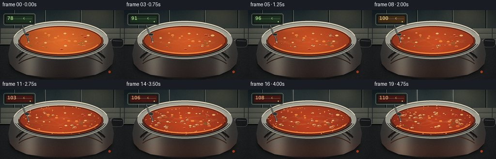
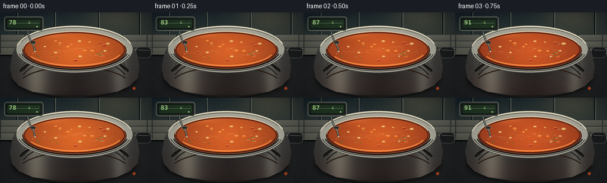

CODING AGENTS AS PIXEL WORLD MODELS
traex/DeepSeek-V4.1-Flash · phygen_108
点击播放 · 原生 RGB 像素
逐轮保存的候选
回放视频、检查图与代码变化。
每份候选均可单独播放。实际图片检查记录在下方工具轨迹中。
候选 01播放与检查图
点击播放 · 原生 RGB 像素


展开代码变化
--- 上一保存版本
+++ 本次保存版本
@@ -0,0 +1,569 @@
+"""Render a five-second soup-boiling timelapse from the text prompt."""
+
+from __future__ import annotations
+
+import math
+from pathlib import Path
+
+import numpy as np
+from PIL import Image, ImageDraw, ImageFilter, ImageFont
+
+import artifact_io
+
+
+ROOT = Path(__file__).resolve().parent
+W, H = 256, 144
+FRAMES, FPS = 20, 4.0
+S = 4 # Supersampling factor for fine bubbles, text, and metal highlights.
+LW, LH = W * S, H * S
+
+FONT_BOLD = "/usr/share/fonts/truetype/dejavu/DejaVuSans-Bold.ttf"
+FONT_CONDENSED = "/usr/share/fonts/truetype/dejavu/DejaVuSansCondensed-Bold.ttf"
+
+
+def box(cx: float, cy: float, rx: float, ry: float):
+ return ((cx - rx) * S, (cy - ry) * S, (cx + rx) * S, (cy + ry) * S)
+
+
+def pts(values):
+ return [(float(x) * S, float(y) * S) for x, y in values]
+
+
+def lerp(a, b, t):
+ return tuple(int(round(x + (y - x) * t)) for x, y in zip(a, b))
+
+
+def mix(a, b, t):
+ return tuple(float(x + (y - x) * t) for x, y in zip(a, b))
+
+
+def clip01(x):
+ return max(0.0, min(1.0, x))
+
+
+def smoothstep(a, b, x):
+ t = clip01((x - a) / (b - a))
+ return t * t * (3.0 - 2.0 * t)
+
+
+def font(size: float, condensed=False):
+ return ImageFont.truetype(FONT_CONDENSED if condensed else FONT_BOLD, int(size * S))
+
+
+def rounded(draw, rect, radius, fill=None, outline=None, width=1):
+ draw.rounded_rectangle(
+ tuple(v * S for v in rect),
+ radius=radius * S,
+ fill=fill,
+ outline=outline,
+ width=max(1, int(width * S)),
+ )
+
+
+def ellipse(draw, cx, cy, rx, ry, fill=None, outline=None, width=1):
+ draw.ellipse(
+ box(cx, cy, rx, ry),
+ fill=fill,
+ outline=outline,
+ width=max(1, int(width * S)),
+ )
+
+
+def ellipse_mask(cx, cy, rx, ry):
+ mask = Image.new("L", (LW, LH), 0)
+ ImageDraw.Draw(mask).ellipse(box(cx, cy, rx, ry), fill=255)
+ return mask
+
+
+def rgba_array(shape=(LH, LW)):
+ return np.zeros((*shape, 4), dtype=np.uint8)
+
+
+def temp_for_frame(i: int) -> float:
+ # The first half is a steep climb; the last half stays above boiling.
+ values = [
+ 78, 83, 87, 91, 94, 96, 98, 99, 100, 101,
+ 102, 103, 104, 105, 106, 107, 108, 108.5, 109, 110,
+ ]
+ return float(values[i])
+
+
+def make_background(frame_index: int, heat: float) -> Image.Image:
+ """Kitchen wall, tiled backsplash, hob, and soft window light."""
+ yy, xx = np.mgrid[0:LH, 0:LW]
+ xn = xx / (LW - 1)
+ yn = yy / (LH - 1)
+
+ # Muted blue-green wall with a warm practical light from upper right.
+ wall_top = np.array([24, 37, 40], dtype=float)
+ wall_bottom = np.array([59, 68, 61], dtype=float)
+ wall = wall_top[None, None, :] + (wall_bottom - wall_top)[None, None, :] * np.clip(yn / 0.51, 0, 1)[..., None]
+ glow = np.exp(-(((xn - 0.80) / 0.34) ** 2 + ((yn - 0.02) / 0.32) ** 2) * 2.4)
+ wall += glow[..., None] * np.array([40, 31, 16])
+ wall += (0.5 - yn)[..., None] * np.array([4, 6, 7])
+
+ # A restrained tiled band gives the pot a believable kitchen scale.
+ tile_top, tile_bottom = 0.255, 0.485
+ tile = (yn >= tile_top) & (yn < tile_bottom)
+ tile_u = (xn * 6.2) % 1.0
+ tile_v = ((yn - tile_top) / (tile_bottom - tile_top) * 3.0) % 1.0
+ grout = (tile_u < 0.035) | (tile_v < 0.09)
+ tile_color = np.array([85, 88, 77], dtype=float)
+ tile_color = tile_color + 15 * (1 - tile_v[..., None]) + 5 * glow[..., None]
+ wall[tile] = tile_color[tile]
+ wall[tile & grout] = np.array([43, 51, 48], dtype=float)
+
+ # Dark stone worktop, with a faint reflection under the saucepan.
+ counter = np.array([30, 34, 34], dtype=float)
+ counter = counter + (yn[..., None] - 0.48) * np.array([12, 9, 7])
+ counter += glow[..., None] * np.array([14, 9, 4])
+ wall[yn >= 0.49] = counter[yn >= 0.49]
+
+ rng = np.random.default_rng(108)
+ speck = rng.normal(0, 1, (LH, LW))
+ speck = np.array(Image.fromarray(((speck * 0.5 + 0.5) * 255).astype(np.uint8)).filter(ImageFilter.GaussianBlur(1.2)))
+ counter_region = yn >= 0.49
+ wall[counter_region] += ((speck[counter_region].astype(float) - 127.0) * 0.10)[:, None]
+
+ image = Image.fromarray(np.clip(wall, 0, 255).astype(np.uint8), "RGB").convert("RGBA")
+ draw = ImageDraw.Draw(image, "RGBA")
+
+ # Soft vertical panel seams in the wall.
+ for x in (28, 92, 166, 235):
+ draw.line([(x * S, 0), (x * S, 0.26 * LH)], fill=(12, 23, 25, 45), width=2 * S)
+ draw.line([(x * S + 1.5 * S, 0), (x * S + 1.5 * S, 0.26 * LH)], fill=(124, 132, 111, 18), width=S)
+
+ # Worktop edge.
+ draw.line([(0, 0.492 * LH), (LW, 0.492 * LH)], fill=(126, 121, 98, 80), width=2 * S)
+ draw.line([(0, 0.502 * LH), (LW, 0.502 * LH)], fill=(10, 15, 15, 120), width=3 * S)
+
+ # Burner plate and expanding heat glow.
+ burner = Image.new("RGBA", (LW, LH), (0, 0, 0, 0))
+ bd = ImageDraw.Draw(burner, "RGBA")
+ ellipse(bd, 125, 108, 109, 40, fill=(17, 20, 20, 205), outline=(78, 76, 66, 80), width=1.2)
+ ellipse(bd, 125, 107, 102, 35, fill=(24, 24, 22, 210), outline=(106, 91, 65, 70), width=1)
+ glow_col = (210, 61, 18, int(35 + 65 * heat))
+ for ring, alpha in ((94, 0.45), (83, 0.52), (72, 0.60), (61, 0.65)):
+ ring_img = Image.new("RGBA", (LW, LH), (0, 0, 0, 0))
+ rd = ImageDraw.Draw(ring_img, "RGBA")
+ ellipse(rd, 125, 107, ring, ring * 0.33, outline=glow_col, width=2.1)
+ ring_img = ring_img.filter(ImageFilter.GaussianBlur(2.4 * S))
+ burner = Image.alpha_composite(burner, ring_img)
+ burner = burner.filter(ImageFilter.GaussianBlur(1.1 * S))
+ image = Image.alpha_composite(image, burner)
+
+ # Tiny indicator light on the hob, becoming hotter over time.
+ led = (248, 91, 38, int(120 + 110 * heat))
+ ImageDraw.Draw(image, "RGBA").ellipse(box(226, 128, 2.5, 2.5), fill=led)
+ return image
+
+
+def make_pot_body(heat: float) -> Image.Image:
+ """Stainless body with a broad highlight and warm firelight."""
+ mask = Image.new("L", (LW, LH), 0)
+ md = ImageDraw.Draw(mask)
+ poly = pts([
+ (26, 58), (21, 70), (17, 91), (20, 111), (32, 124),
+ (55, 134), (91, 139), (126, 140), (162, 139), (197, 134),
+ (219, 124), (232, 111), (235, 91), (231, 70), (225, 58),
+ ])
+ md.polygon(poly, fill=255)
+
+ yy, xx = np.mgrid[0:LH, 0:LW]
+ xn = xx / (LW - 1)
+ yn = yy / (LH - 1)
+ left_hi = np.exp(-((xn - 0.235) / 0.075) ** 2)
+ right_hi = np.exp(-((xn - 0.790) / 0.050) ** 2)
+ center_dark = np.exp(-((xn - 0.51) / 0.15) ** 2)
+ vertical = np.clip((yn - 0.37) / 0.60, 0, 1)
+
+ base = np.zeros((LH, LW, 3), dtype=float)
+ base[:] = np.array([61, 61, 57])
+ base += left_hi[..., None] * np.array([55, 54, 46])
+ base += right_hi[..., None] * np.array([38, 39, 35])
+ base -= center_dark[..., None] * np.array([19, 18, 16])
+ base -= vertical[..., None] * np.array([14, 12, 9])
+ # Warm bounce from the burner.
+ fire = np.exp(-((yn - 0.91) / 0.18) ** 2) * (0.3 + 0.7 * heat)
+ base += fire[..., None] * np.array([32, 9, 1])
+
+ body = Image.fromarray(np.clip(base, 0, 255).astype(np.uint8), "RGB").convert("RGBA")
+ body.putalpha(mask)
+ d = ImageDraw.Draw(body, "RGBA")
+
+ # Curved bands imply a round vessel rather than a flat cylinder.
+ for off, alpha in ((-0.10, 26), (0.12, 20), (0.29, 14)):
+ d.arc(
+ (int((125 - 91) * S), int((63 + off * 43) * S),
+ int((125 + 91) * S), int((63 + off * 43 + 86) * S)),
+ 198, 342, fill=(230, 224, 202, alpha), width=2 * S,
+ )
+ d.arc(
+ (int((125 - 96) * S), int((70) * S), int((125 + 96) * S), int((147) * S)),
+ 195, 345, fill=(17, 18, 16, 100), width=4 * S,
+ )
+ # A narrow warm reflection from the hob.
+ d.arc(
+ (int((125 - 94) * S), int((91) * S), int((125 + 94) * S), int((154) * S)),
+ 202, 338, fill=(236, 111, 45, int(28 + 32 * heat)), width=2 * S,
+ )
+ return body
+
+
+def make_handle() -> Image.Image:
+ layer = Image.new("RGBA", (LW, LH), (0, 0, 0, 0))
+ d = ImageDraw.Draw(layer, "RGBA")
+ # Bracket and long black handle, slightly lifted on the right.
+ d.polygon(pts([(210, 60), (219, 57), (232, 62), (255, 62),
+ (255, 74), (231, 75), (215, 72)]), fill=(35, 38, 37, 255))
+ d.line(pts([(214, 62), (253, 64)]), fill=(173, 177, 162, 150), width=2 * S)
+ d.line(pts([(215, 71), (253, 73)]), fill=(10, 13, 13, 190), width=2 * S)
+ rounded(d, (229, 58, 255, 77), 7, fill=(25, 28, 28, 255), outline=(89, 94, 87, 180), width=1)
+ d.line(pts([(233, 63), (252, 64)]), fill=(150, 151, 137, 100), width=max(1, int(1.2 * S)))
+ return layer
+
+
+def soup_gradient(temp: float) -> Image.Image:
+ """Radial tomato soup surface, darker and more concentrated with heat."""
+ heat = clip01((temp - 78) / 32)
+ yy, xx = np.mgrid[0:LH, 0:LW]
+ xn = (xx / (LW - 1) - 0.5) * 2.0
+ yn = (yy / (LH - 1) - 0.45) * 2.0
+ r = np.sqrt((xn * 0.88) ** 2 + (yn * 0.60) ** 2)
+ center = mix((224, 107, 42), (178, 64, 31), heat)
+ edge = mix((132, 53, 27), (101, 38, 27), heat)
+ t = np.clip(r / 1.05, 0, 1)[..., None]
+ arr = np.array(center, dtype=float) * (1 - t) + np.array(edge, dtype=float) * t
+ # Warm reflected window light across the upper-left of the liquid.
+ sheen = np.exp(-(((xn + 0.38) / 0.34) ** 2 + ((yn + 0.43) / 0.17) ** 2) * 2.2)
+ arr += sheen[..., None] * np.array([46, 35, 17])
+ # Slight red boost at boiling point.
+ arr += heat * np.exp(-((yn + 0.05) / 0.55) ** 2)[..., None] * np.array([12, 0, 0])
+ return Image.fromarray(np.clip(arr, 0, 255).astype(np.uint8), "RGB").convert("RGBA")
+
+
+def draw_soup_surface(image: Image.Image, frame_index: int, temp: float, heat: float):
+ cx, cy, rx, ry = 125.5, 63.5, 86.5, 31.2
+ mask = ellipse_mask(cx, cy, rx, ry)
+ gradient = soup_gradient(temp)
+ gradient.putalpha(mask)
+ image.alpha_composite(gradient)
+
+ d = ImageDraw.Draw(image, "RGBA")
+ # Dark inner rim and a thin hot-metal catchlight.
+ ellipse(d, cx, cy, rx - 0.8, ry - 0.8, outline=(93, 36, 24, 230), width=2.2)
+ d.arc(box(cx, cy, rx + 0.5, ry + 0.5), 184, 346, fill=(238, 218, 177, 150), width=max(1, int(1.1 * S)))
+ d.arc(box(cx, cy, rx - 2.1, ry - 1.7), 10, 170, fill=(54, 24, 18, 130), width=max(1, int(1.4 * S)))
+
+ # Convection ribbons, clipped to the soup ellipse.
+ conv = Image.new("RGBA", (LW, LH), (0, 0, 0, 0))
+ cd = ImageDraw.Draw(conv, "RGBA")
+ for j in range(5):
+ points = []
+ phase = j * 1.71 + frame_index * (0.12 + 0.02 * j)
+ for k in range(22):
+ u = -1.0 + 2.0 * k / 21
+ v = 0.22 * math.sin(u * 4.5 + phase) + 0.09 * math.sin(u * 9.0 - phase * 1.7)
+ v += (j - 2) * 0.14
+ if u * u + (v / 0.46) ** 2 > 0.94:
+ continue
+ points.append(((cx + u * rx * 0.88) * S, (cy + v * ry * 0.88) * S))
+ if len(points) > 2:
+ cd.line(points, fill=(255, 196, 119, int(18 + 24 * heat)),
+ width=max(1, int((2.0 + 0.3 * j) * S)))
+ conv = conv.filter(ImageFilter.GaussianBlur(1.2 * S))
+ conv.putalpha(Image.composite(conv.getchannel("A"), Image.new("L", (LW, LH), 0), mask))
+ image.alpha_composite(conv)
+
+
+def ingredient_positions(frame_index: int, count: int = 34):
+ rng = np.random.default_rng(221)
+ result = []
+ for i in range(count):
+ u = rng.uniform(-0.78, 0.78)
+ v = rng.uniform(-0.56, 0.56)
+ if u * u + (v / 0.64) ** 2 > 0.82:
+ u *= 0.72
+ v *= 0.72
+ phase = rng.uniform(0, math.tau)
+ speed = rng.uniform(0.035, 0.085)
+ kind = i % 5
+ size = rng.uniform(1.2, 3.8)
+ result.append((u, v, phase, speed, kind, size))
+ return result
+
+
+def draw_ingredients(image: Image.Image, frame_index: int, heat: float):
+ d = ImageDraw.Draw(image, "RGBA")
+ cx, cy, rx, ry = 125.5, 63.5, 86.5, 31.2
+ colors = [
+ (235, 126, 43, 220), # carrot
+ (166, 48, 31, 235), # tomato
+ (86, 113, 48, 225), # herb
+ (230, 185, 110, 205), # onion
+ (204, 85, 36, 210), # pepper / bean
+ ]
+ for u0, v0, phase, speed, kind, size in ingredient_positions(frame_index):
+ ang = frame_index * speed + phase
+ u = u0 + 0.030 * math.sin(ang * 1.7 + phase)
+ v = v0 + 0.035 * math.sin(ang * 1.2 + phase * 1.8)
+ # Keep the animated pieces inside the liquid.
+ if u * u + (v / 0.64) ** 2 > 0.86:
+ u *= 0.90
+ v *= 0.90
+ x = cx + u * rx
+ y = cy + v * ry
+ angle = phase + frame_index * speed * 1.4
+ if kind == 2:
+ # Herb flecks are short slanted dashes.
+ dx = math.cos(angle) * size * 1.2
+ dy = math.sin(angle) * size * 0.55
+ d.line([((x - dx) * S, (y - dy) * S), ((x + dx) * S, (y + dy) * S)],
+ fill=colors[kind], width=max(1, int(1.2 * S)))
+ else:
+ rr = size * (0.92 + 0.12 * math.sin(phase + frame_index))
+ d.ellipse(box(x, y, rr, rr * 0.48), fill=colors[kind])
+ d.arc(box(x, y, rr, rr * 0.48), 190, 330,
+ fill=(255, 204, 137, 100), width=max(1, int(0.65 * S)))
+
+ # Tomato-colored reflection along the liquid edge.
+ d.arc(box(125.5, 63.5, 81, 27), 18, 155,
+ fill=(248, 139, 65, int(38 + 36 * heat)), width=2 * S)
+
+
+def bubble_events():
+ rng = np.random.default_rng(441)
+ events = []
+ for i in range(86):
+ # More bubbles occur later, when the soup is above 100 C.
+ birth = 19.0 * (rng.random() ** 0.56)
+ life = rng.uniform(1.5, 3.8)
+ u = rng.uniform(-0.82, 0.82)
+ v = rng.uniform(-0.55, 0.55)
+ if u * u + (v / 0.66) ** 2 > 0.82:
+ u *= 0.78
+ v *= 0.78
+ maxr = rng.uniform(1.1, 5.4)
+ phase = rng.uniform(0, math.tau)
+ events.append((birth, life, u, v, maxr, phase))
+ return events
+
+
+BUBBLES = bubble_events()
+
+
+def draw_bubbles(image: Image.Image, frame_index: int, temp: float, heat: float):
+ d = ImageDraw.Draw(image, "RGBA")
+ cx, cy, rx, ry = 125.5, 63.5, 86.5, 31.2
+ active = 0
+ for birth, life, u0, v0, maxr, phase in BUBBLES:
+ age = frame_index - birth
+ if age < 0 or age > life:
+ continue
+ active += 1
+ p = age / life
+ # Grow, wobble, then collapse as the bubble reaches the surface.
+ envelope = math.sin(math.pi * p) ** 0.42
+ r = maxr * (0.30 + 0.70 * envelope) * (0.72 + 0.55 * heat)
+ ang = phase + age * 1.05
+ u = u0 + 0.018 * math.sin(ang * 1.9) + 0.010 * age * math.cos(phase)
+ v = v0 + 0.022 * math.sin(ang * 1.4 + phase)
+ if u * u + (v / 0.65) ** 2 > 0.88:
+ continue
+ x = cx + u * rx
+ y = cy + v * ry
+ rr = min(8.0, max(0.8, r))
+ ry_bubble = max(0.55, rr * 0.43)
+ # Dark meniscus, bright crown, and a glint of kitchen light.
+ d.ellipse(box(x, y, rr + 0.45, ry_bubble + 0.35), fill=(70, 25, 17, 185))
+ d.ellipse(box(x, y, rr, ry_bubble), fill=(183, 69, 31, 220),
+ outline=(255, 159, 75, 220), width=max(1, int(0.72 * S)))
+ d.arc(box(x, y, rr - 0.25, ry_bubble - 0.2), 185, 315,
+ fill=(255, 233, 174, 230), width=max(1, int(0.78 * S)))
+ if rr > 2.1:
+ d.ellipse(box(x - rr * 0.28, y - ry_bubble * 0.20,
+ max(0.35, rr * 0.19), max(0.25, rr * 0.10)),
+ fill=(255, 243, 202, 175))
+
+ # Fine foam at the edge becomes prominent at a rolling boil.
+ if heat > 0.55:
+ rng = np.random.default_rng(900 + frame_index)
+ foam_count = int(12 + 38 * heat)
+ for _ in range(foam_count):
+ a = rng.uniform(0, math.tau)
+ rad = rng.uniform(0.76, 0.98)
+ x = cx + math.cos(a) * rx * rad
+ y = cy + math.sin(a) * ry * rad
+ rr = rng.uniform(0.45, 1.45)
+ d.ellipse(box(x, y, rr, rr * 0.50),
+ fill=(242, 166, 92, int(80 + 75 * heat)))
+
+ # A few soup droplets arc above the pot after the boil starts.
+ if frame_index >= 10:
+ rng = np.random.default_rng(125 + frame_index)
+ for _ in range(1 + frame_index // 6):
+ sx = rng.uniform(58, 194)
+ sy = 58 - rng.uniform(0, 8)
+ h = rng.uniform(4, 13)
+ d.ellipse(box(sx, sy - h, 0.9, 1.3), fill=(238, 143, 69, 195))
+ d.line([((sx - 0.8) * S, (sy - h + 1.2) * S), ((sx - 0.3) * S, (sy - h + 3.2) * S)],
+ fill=(255, 197, 113, 120), width=max(1, int(0.45 * S)))
+
+
+def draw_steam(image: Image.Image, frame_index: int, heat: float, front=False):
+ layer = Image.new("RGBA", (LW, LH), (0, 0, 0, 0))
+ d = ImageDraw.Draw(layer, "RGBA")
+ count = 2 + int(6 * heat)
+ rng = np.random.default_rng(71 if not front else 79)
+ for j in range(count):
+ phase = j * 1.23 + frame_index * 0.22
+ base_x = 43 + (j + 0.5) * (166.0 / max(1, count))
+ base_x += 5.0 * math.sin(phase * 0.9) + (12 if front else 0)
+ start_y = 55 + rng.uniform(-5, 5)
+ top_y = rng.uniform(-4, 17) if front else rng.uniform(-12, 4)
+ length = start_y - top_y
+ for k in range(18):
+ t = k / 17.0
+ x = base_x + 7.0 * math.sin(t * 4.1 + phase) + 3.5 * math.sin(t * 8.0 - phase * 0.7)
+ y = start_y - length * t
+ rr = 3.0 + 6.0 * t + 1.0 * math.sin(phase + t * 5.0)
+ alpha = int((5 + 13 * heat) * (0.65 + 0.35 * t) * (1.0 - 0.22 * t))
+ d.ellipse(box(x, y, rr, rr * 0.82),
+ fill=(221, 230, 218, max(2, alpha)))
+ layer = layer.filter(ImageFilter.GaussianBlur(8.0 * S))
+ image.alpha_composite(layer)
+
+
+def draw_thermometer(image: Image.Image, temp: float):
+ d = ImageDraw.Draw(image, "RGBA")
+ # Probe housing.
+ rounded(d, (7, 7, 73, 31), 4.2, fill=(33, 39, 37, 245), outline=(133, 147, 128, 220), width=1)
+ rounded(d, (9, 9, 71, 29), 3.0, fill=(22, 28, 26, 245), outline=(77, 91, 78, 210), width=0.7)
+ screen = (12, 12, 68, 26)
+ if temp < 99.5:
+ screen_fill = (33, 58, 35, 255)
+ screen_text = (183, 242, 148, 255)
+ elif temp < 102:
+ screen_fill = (76, 52, 23, 255)
+ screen_text = (255, 221, 133, 255)
+ else:
+ screen_fill = (76, 28, 21, 255)
+ screen_text = (255, 181, 121, 255)
+ rounded(d, screen, 2.0, fill=screen_fill)
+ d.rectangle((13 * S, 13 * S, 67 * S, 25 * S), fill=(0, 0, 0, 0))
+ # Redraw the LCD body with a tiny scanline and a bright numeric readout.
+ rounded(d, screen, 2.0, fill=screen_fill)
+ d.line([(14 * S, 18.2 * S), (66 * S, 18.2 * S)], fill=(255, 255, 255, 9), width=1)
+ temp_text = f"{int(round(temp))}"
+ d.text((15 * S, 10.7 * S), temp_text, font=font(10.0, condensed=True),
+ fill=screen_text, stroke_width=0, spacing=0)
+ d.text((48 * S, 14.2 * S), "C", font=font(5.2, condensed=True), fill=screen_text)
+ d.ellipse(box(62.5, 24.0, 1.1, 1.1), fill=(194, 239, 153, 220))
+ # Metal probe curves from the housing, over the rim, into the soup.
+ d.line(pts([(46, 30), (48, 38), (52, 49), (57, 57), (59, 66)]),
+ fill=(31, 36, 35, 255), width=max(1, int(2.8 * S)))
+ d.line(pts([(46, 30), (48, 38), (52, 49), (57, 57), (59, 66)]),
+ fill=(176, 184, 167, 230), width=max(1, int(1.0 * S)))
+ d.ellipse(box(59, 66, 1.5, 0.9), fill=(223, 213, 176, 230))
+ # Small clip where the probe meets the pan.
+ rounded(d, (51, 48, 60, 53), 1.2, fill=(43, 46, 42, 230), outline=(167, 166, 142, 150), width=0.6)
+
+
+def add_vignette_and_grain(image: Image.Image, frame_index: int) -> Image.Image:
+ arr = np.asarray(image.convert("RGB")).astype(np.float32)
+ yy, xx = np.mgrid[0:H, 0:W]
+ xn = (xx - W * 0.5) / (W * 0.62)
+ yn = (yy - H * 0.50) / (H * 0.70)
+ vig = 1.0 - 0.34 * np.clip(xn * xn + yn * yn, 0, 1) ** 1.25
+ arr *= vig[..., None]
+ # Subtle warm center and cool edge grade.
+ arr[..., 0] += 3.0 * (1.0 - np.clip(xn * xn + yn * yn, 0, 1))
+ arr[..., 2] += 2.0 * np.clip(xn * xn + yn * yn, 0, 1)
+ rng = np.random.default_rng(7300 + frame_index)
+ grain = rng.normal(0, 1.25, (H, W, 1))
+ arr += grain
+ return Image.fromarray(np.clip(arr, 0, 255).astype(np.uint8), "RGB")
+
+
+def render_frame(frame_index: int) -> np.ndarray:
+ heat = clip01(frame_index / (FRAMES - 1))
+ temp = temp_for_frame(frame_index)
+ image = make_background(frame_index, heat)
+
+ # Back steam gives the upper part of the image depth.
+ draw_steam(image, frame_index, heat, front=False)
+
+ # Pot shadow, long handle, then the body and its reflective rim.
+ shadow = Image.new("RGBA", (LW, LH), (0, 0, 0, 0))
+ sd = ImageDraw.Draw(shadow, "RGBA")
+ ellipse(sd, 125, 116, 105, 26, fill=(3, 7, 7, 125))
+ shadow = shadow.filter(ImageFilter.GaussianBlur(7 * S))
+ image.alpha_composite(shadow)
+ image.alpha_composite(make_handle())
+ image.alpha_composite(make_pot_body(heat))
+
+ # Silver rim: a bright outer ellipse with a dark inner shoulder.
+ rim = Image.new("RGBA", (LW, LH), (0, 0, 0, 0))
+ rd = ImageDraw.Draw(rim, "RGBA")
+ ellipse(rd, 125.5, 62.0, 99.0, 40.0, fill=(169, 170, 156, 255),
+ outline=(72, 76, 70, 255), width=1.2)
+ ellipse(rd, 125.5, 64.2, 89.0, 32.8, fill=(49, 40, 33, 255),
+ outline=(230, 227, 201, 210), width=1.0)
+ # Rim highlights.
+ rd.arc(box(125.5, 62.0, 98.5, 39.5), 190, 346,
+ fill=(246, 239, 207, 225), width=max(1, int(2.2 * S)))
+ rd.arc(box(125.5, 63.0, 91.5, 34.0), 12, 168,
+ fill=(22, 21, 18, 210), width=max(1, int(2.0 * S)))
+ rd.arc(box(125.5, 62.0, 96.0, 37.0), 201, 337,
+ fill=(105, 104, 91, 180), width=max(1, int(1.0 * S)))
+ image.alpha_composite(rim)
+
+ draw_soup_surface(image, frame_index, temp, heat)
+ draw_ingredients(image, frame_index, heat)
+ draw_bubbles(image, frame_index, temp, heat)
+
+ # Bright rim catches the practical light after the liquid is drawn.
+ d = ImageDraw.Draw(image, "RGBA")
+ d.arc(box(125.5, 62.0, 98.5, 39.5), 188, 346,
+ fill=(255, 246, 216, 175), width=max(1, int(1.2 * S)))
+ d.arc(box(125.5, 62.0, 96.0, 37.2), 14, 168,
+ fill=(20, 21, 19, 180), width=max(1, int(1.2 * S)))
+
+ # Front steam and the thermometer remain readable above the action.
+ draw_steam(image, frame_index, heat, front=True)
+ draw_thermometer(image, temp)
+
+ small = image.convert("RGB").resize((W, H), Image.Resampling.LANCZOS)
+ return np.asarray(add_vignette_and_grain(small, frame_index), dtype=np.uint8)
+
+
+def write_mp4(frames: np.ndarray):
+ try:
+ import cv2
+
+ writer = cv2.VideoWriter(
+ str(ROOT / "soup_timelapse.mp4"),
+ cv2.VideoWriter_fourcc(*"mp4v"),
+ FPS,
+ (W, H),
+ )
+ if not writer.isOpened():
+ return
+ for frame in frames:
+ writer.write(cv2.cvtColor(frame, cv2.COLOR_RGB2BGR))
+ writer.release()
+ except Exception:
+ # The required artifact bundle is still generated if the optional
+ # local codec is unavailable.
+ pass
+
+
+def main():
+ frames = np.stack([render_frame(i) for i in range(FRAMES)])
+ artifact_io.save(frames, ROOT)
+ write_mp4(frames)
+ print(f"rendered {frames.shape} at {FPS:g} fps")
+
+
+if __name__ == "__main__":
+ main()
可观测工具轨迹
实际执行的命令与返回图片。
命令 1exit 0
/bin/bash -c "pwd && rg --files -g 'prompt.txt' -g 'GENERATION_RULES.md' -g 'task_spec.json' -g '"'!*.mp4'"' -g '"'!*.mov'"'"
命令 2exit 0
/bin/bash -c 'git status --short && ls -la'
命令 3exit 0
/bin/bash -c 'cat prompt.txt'
命令 4exit 0
/bin/bash -c 'cat GENERATION_RULES.md'
命令 5exit 0
/bin/bash -c "cat task_spec.json && printf '\\n--- artifact_io.py ---\\n' && sed -n '1,240p' artifact_io.py && printf '\\n--- player ---\\n' && sed -n '1,220p' player_template.html"
命令 6exit 0
/bin/bash -c "python - <<'PY'
import numpy, PIL
print('numpy', numpy.__version__)
print('PIL', PIL.__version__)
PY"命令 7exit 0
/bin/bash -c 'fc-list | head -20'
命令 8exit 0
/bin/bash -c "find /usr/share/fonts -type f \\( -name '*.ttf' -o -name '*.otf' \\) | head -30"
命令 9exit 0
/bin/bash -c 'command -v ffmpeg || true'
命令 10exit 0
/bin/bash -c "python - <<'PY' for m in ['cv2','imageio','av']: try: x=__import__(m); print(m,'yes',getattr(x,'__version__','')) except Exception as e: print(m,'no',type(e).__name__) PY"
命令 11exit 0
/bin/bash -c "python - <<'PY'
import cv2
print(cv2.getBuildInformation().split('Video I/O:')[1].split('Parallel framework:')[0])
PY"命令 12exit 0
/bin/bash -c "python - <<'PY' import av print(av.codecs_available if hasattr(av,'codecs_available') else 'no attr') PY"
命令 13exit 0
/bin/bash -c 'command -v chafa || command -v viu || command -v img2txt || command -v jp2 || true'
命令 14exit 1
/bin/bash -c 'python generate.py'
命令 15exit 0
/bin/bash -c "rg -n 'width=["'^,)]*[0-9]'"\\.[0-9]+ \\* S|width=max\\(1, int\\(' generate.py"命令 16exit 1
/bin/bash -c 'python generate.py'
命令 17exit 0
/bin/bash -c 'python generate.py'
命令 18exit 0
/bin/bash -c "python - <<'PY'
from PIL import Image
import numpy as np
im=Image.open('inspection.png').convert('RGB')
a=np.asarray(im)
# Approximate grayscale/color-class view of contact sheet.
a=np.asarray(im.resize((96,42), Image.Resampling.BILINEAR))
chars=' .:-=+*#%@'
for row in a:
lum=(0.2126*row[:,0]+0.7152*row[:,1]+0.0722*row[:,2])
s=''.join(chars[min(9,int(v/256*10))] for v in lum)
print(s)
PY"命令 19exit 0
/bin/bash -c 'command -v tesseract || true'
命令 20exit 0
/bin/bash -c 'ls -lh frames/*.png inspection.png transition_check.png pixels.npz index.html soup_timelapse.mp4 2>/dev/null | tail -12'
命令 21exit 0
/bin/bash -c "python - <<'PY'
import cv2, numpy as np
from pathlib import Path
cap=cv2.VideoCapture('soup_timelapse.mp4')
print('mp4_open',cap.isOpened(),'frames',int(cap.get(cv2.CAP_PROP_FRAME_COUNT)),'size',int(cap.get(cv2.CAP_PROP_FRAME_WIDTH)),int(cap.get(cv2.CAP_PROP_FRAME_HEIGHT)),'fps',cap.get(cv2.CAP_PROP_FPS))
frames=np.load('pixels.npz')['pixels']
print('npz',frames.shape,frames.dtype,'range',int(frames.min()),int(frames.max()))
a=np.stack([cv2.imread(str(p)) for p in sorted(Path('frames').glob('*.png'))])
print('frames',a.shape,'means',np.round(a.mean((1,2,3)),2).tolist())
d=np.abs(a[1:].astype(float)-a[:-1]).mean((1,2,3))
print('motion',np.round(d,2).tolist(),'min',round(float(d.min()),2),'max',round(float(d.max()),2))
PY"命令 22exit 0
/bin/bash -c "python - <<'PY'
from PIL import Image
import numpy as np
for fi in [0,9,19]:
a=np.asarray(Image.open(f'frames/{fi:02d}.png').convert('RGB').resize((64,36),Image.Resampling.BOX)).astype(float)
print('\\nFRAME',fi)
for row in a:
s=''
for r,g,b in row:
mx=max(r,g,b); mn=min(r,g,b)
if mx<22: c=' '
elif r>g*1.30 and r>b*1.45 and r>75: c='O' if r>145 else 'o'
elif r>g*1.15 and g>b*1.35 and r>80: c='Y'
elif mx-mn<18:
c='@' if mx>170 else 'S' if mx>100 else 's' if mx>55 else '.'
elif b>=r and g>=r: c='c' if mx>90 else ','
elif r>g*1.05 and g>b*1.12: c='n' if mx>100 else ';'
else: c='+'
s+=c
print(s)
PY"命令 23exit 0
/bin/bash -c "python - <<'PY'
from PIL import Image
import numpy as np
for fi in [0,9,10,19]:
im=Image.open(f'frames/{fi:02d}.png')
a=np.asarray(im)
# Screen and scene diagnostics.
scr=a[12:27,12:69]
print(fi, 'meanRGB', np.round(a.mean((0,1)),1), 'screen', np.round(scr.mean((0,1)),1), 'bright_px', int((a.mean(2)>180).sum()), 'orange_px', int(((a[:,:,0]>120)&(a[:,:,0]>a[:,:,1]*1.35)&(a[:,:,1]>a[:,:,2]*1.3)).sum()))
PY"命令 24exit 0
/bin/bash -c "python - <<'PY'
from PIL import Image
import numpy as np
for fi in [0,5,9,10,15,19]:
a=np.asarray(Image.open(f'frames/{fi:02d}.png').convert('RGB'))
s=a[12:27,12:69]
# green/yellow LCD glyph pixels vs screen fill
g=s[(s[:,:,1]>120)&(s[:,:,1]>s[:,:,0]*1.12)&(s[:,:,1]>s[:,:,2]*1.15)]
print(fi,len(g),np.round(g.mean(0),1) if len(g) else '-')
PY"命令 25exit 0
/bin/bash -c "python -m py_compile generate.py && rg -n '__DATA__|__ID__' index.html || true"
命令 26exit 0
/bin/bash -c "python - <<'PY'
from pathlib import Path
from PIL import Image
import json, numpy as np
spec=json.loads(Path('task_spec.json').read_text())
frames=sorted(Path('frames').glob('*.png'))
assert len(frames)==spec['frames']
assert all(Image.open(p).size==(spec['width'],spec['height']) for p in frames)
a=np.load('pixels.npz')['pixels']
assert a.shape==(spec['height'],spec['width'],spec['frames'])
print('artifact_check: PASS')
print('frames:',len(frames),'resolution:',spec['width'],'x',spec['height'],'fps:',spec['fps'])
PY"命令 27exit 0
/bin/bash -c 'git status --short -- . 2>/dev/null || true'
保存候选 1 份；完成命令 27 次；可验证图片返回 0 张。原始 API 响应与完整日志保留在本地。